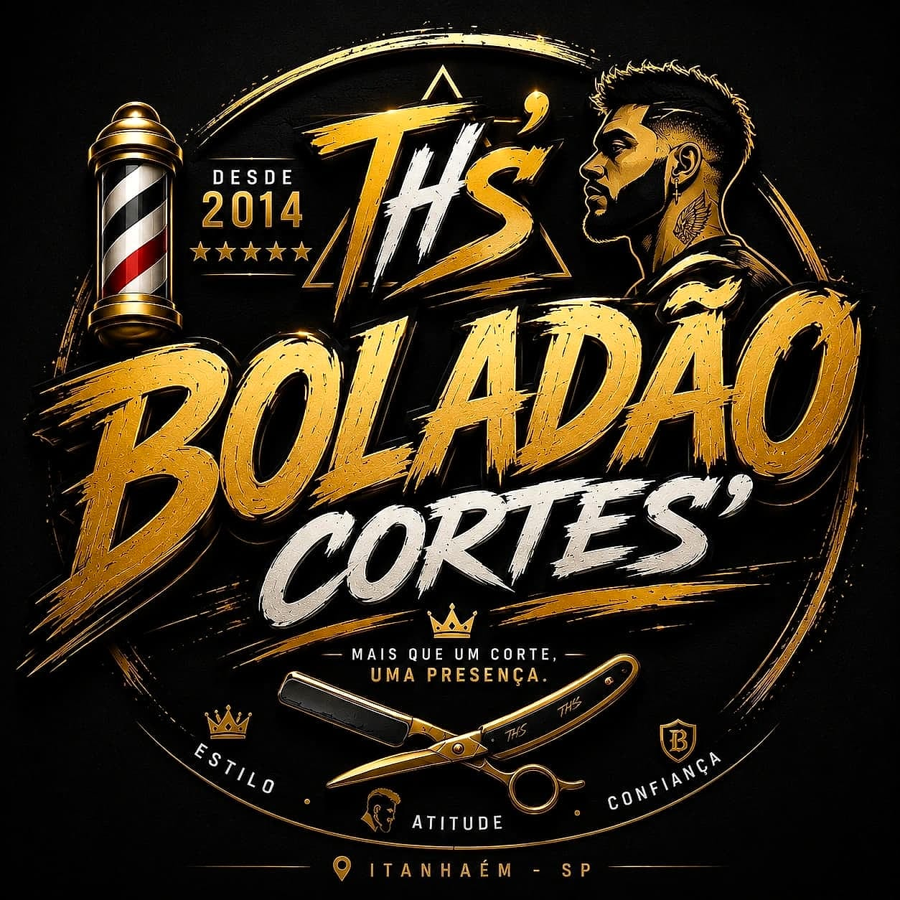

Olá! Tudo bem?
Meu nome é Caio. Encontrei a Boladão Cortes no Google e fiquei impressionado:
"Pedi um corte personalizado e o barbeiro entregou exatamente o que eu queria. Ambiente top, atendimento respeitoso e preço justo."
E a logo de vocês, preta e dourada, "Mais que um corte, uma presença", é muito bonita. Isso merece aparecer mais.
🔎 Não encontramos um site ligado à sua ficha do Google. Quem procura "barbearia em Itanhaém" vê só o nome e o telefone.
✅ O site mostra serviços, horário, endereço e as avaliações num lugar só.
💬 Não tem um botão pra chamar no WhatsApp. O telefone só aparece na ficha do Maps, e quem quer marcar horário precisa ligar.
✅ O site tem um botão grande pra falar com vocês na hora.
📸 Só 7 fotos na ficha, nenhuma da fachada. Quem nunca foi aí não sabe como é a barbearia por fora nem acha fácil na avenida.
✅ O site mostra o salão, os cortes e o mapa pra chegar.
📱 Não encontramos Instagram ou Facebook ligados à sua ficha. Quem quer ver os cortes antes de ir não acha.
✅ O site já mostra os degradês feitos aí, e dá pra colocar o Instagram quando quiser.
💲 Os serviços e o preço não aparecem em lugar nenhum. Só uma avaliação comenta o valor.
✅ O site lista os serviços: degradê, corte personalizado, infantil e barba.
Montei um site com a logo, as cores e as fotos da Boladão. Funciona direitinho no celular. É só abrir e dar uma olhada, sem compromisso:
Ver o site da Boladão CortesSe gostar, me fala que eu ajusto o que quiser: fotos, serviços, horário ou o número do WhatsApp.
Um abraço,
Caio